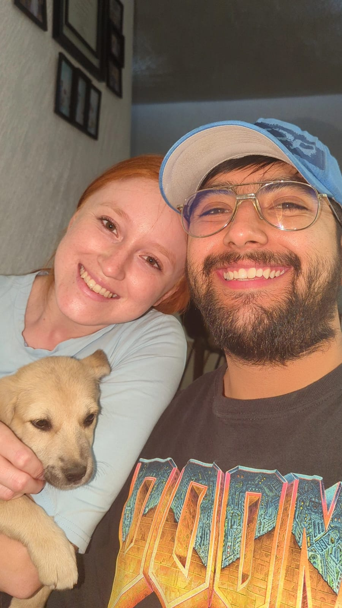

About Me
My name is Eduardo Svein Salazar. I was born in Mexico and live with my family in Pachuca City, Hidalgo, Mexico. I am currently working as a travel counselor with AMEX GBT. I am married with my beatuful wife, Libni, we just celebrated a year of marriage in May 27th. I love basketball and baking, board games and rubik cubes, and I am exited to learn more coding.
